Every answer from a language model begins as refined sand — and crosses half the world before it reaches you. Follow the twenty-six steps from raw silicon to a finished thought.
Twenty-six stages · three continents · one sentence. Every layer earns its place before a model can answer you.